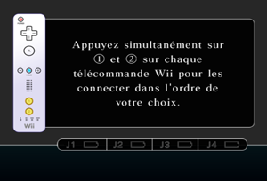

3 |
Utilisation de la manette Wii Remote |
 |

Note : Si le guide de votre dragonne est muni d’un levier, abaissez-le jusqu’à ce que vous entendiez un clic. Cela permettra au guide de rester en place.
Cette procédure permet à la manette Wii Remote de communiquer avec la console Wii.
La manette Wii Remote fournie avec la console Wii a déjà été synchronisée avec celle-ci.
Il existe deux modes de synchronisation différents.
MODE STANDARD – La procédure de synchronisation en mode standard sert à ajouter d’autres manettes Wii Remote à votre console Wii ou à effectuer une nouvelle synchronisation de votre manette Wii Remote. Une fois la manette Wii Remote synchronisée, vous pourrez éliminer ce paramétrage en effectuant une nouvelle synchronisation sur une autre console Wii.
MODE TEMPORAIRE – Ce mode vous permet d’utiliser temporairement votre manette Wii Remote sur une autre console Wii et d’utiliser la manette Wii Remote d’un ami avec votre console Wii. Il n’efface pas le mode standard sauvegardé dans la manette Wii Remote. Dans ce mode, la manette Wii Remote communique avec la console Wii tant que celle-ci reste allumée. La synchronisation est perdue une fois que la console Wii est éteinte.
Note : Seule une manette Wii Remote en mode standard peut allumer ou éteindre la console Wii.
Synchronisation en mode standard
Note : Assurez-vous que des piles sont insérées dans la manette Wii Remote.
À la fin de la synchronisation, le témoin allumé indique le nombre attribué au joueur.
NOTE : La fréquence de clignotement des témoins change en fonction de l’état des piles. 
Cette procédure doit être effectuée chaque fois que vous ajoutez une manette Wii Remote à votre console Wii.
Synchronisation temporaire
NOTE : Ce mode vous permet d’annuler temporairement la configuration en mode standard
de toutes les manettes Wii Remote tant que la console Wii reste
allumée. Une fois la console Wii rallumée, les manettes Wii Remotes
fonctionneront en mode standard.

IMPORTANT : Si votre manette Wii Remote perd la synchronisation avec la console Wii et que vous n’arrivez plus à les synchroniser, veuillez vous référer à la section « En cas de problèmes » concernant la manette Wii Remote du Mode d’emploi de la Wii – Installation de la console.
Si la position neutre* du levier de contrôle du
Nunchuk est mal initialisée et que vous rencontrez des problèmes de
contrôle durant vos parties, procédez comme suit :

[position neutre] * La « position neutre » désigne la position du levier de contrôle quand celui-ci n’est pas incliné. Si le levier de contrôle n’est pas en position neutre lorsque vous allumez la console, cette position deviendra la nouvelle position neutre et le levier de contrôle ne fonctionnera pas de manière normale. |

 |
 |
 |